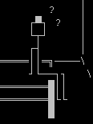
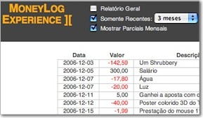
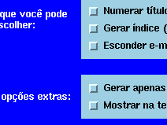
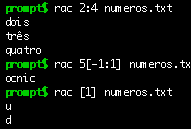
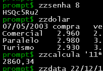
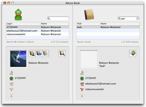
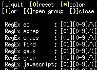
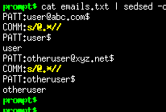

Programar é criar — Uma idéia de sua cabeça vira um "ser vivo" que habita o computador e se relaciona com outros programas e seres humanos.
Programar é um desafio — Para concretizar idéias, vários problemas e obstáculos aparecem e é preciso fazer algoritmos para resolvê-los.
Programar é se dedicar — Mesmo depois de "pronto" o programa, sempre há algo a melhorar, bugs para corrigir, versões para lançar.
Programar é um prazer — É um brinquedo que não enjoa. É sempre diferente, é sempre uma aventura.
Esta página reúne todos os programas que fiz. É um grande índice descritivo, com informações gerais sobre cada programa.
Todos estes programas são gratuitos e possuem o código fonte aberto (GPL, Open Source, etc). Você pode baixar, usar e modificar sem medo.
Primeiro a historinha
Sou um programador autodidata, não tendo estudado formalmente nessa área. Tanto no curso técnico (Eletrônica) quanto na faculdade (Processamento de Dados), não cursei matérias sobre compiladores, algoritmos, autômatos e outros bichinhos do "mundo da programação" que qualquer aluno de bacharelado estuda. Também nunca li livros sobre esses assuntos, livros técnicos são muito chatos.
Parênteses: Os únicos livros técnicos que já li foram "Mastering Regular Expressions", "Unix Text Processing" e o "The Art of Unix Programming".
Aprendi na prática, pesquisando na Internet, participando de listas de discussão e olhando o código de outros programas. Poder "olhar o código" foi essencial para o meu aprendizado, por isso todos os programas que faço têm o código fonte aberto, para que qualquer um possa ver e também aprender.
Gosto de linguagens interpretadas e de fazer programas alto-nível, sem precisar se preocupar com as entranhas da máquina: bits, bytes e essas malices. Para mim programar é criar algoritmos e estruturas de dados, essa é a parte divertida. Se for para ficar massageando o hardware cuidando de ponteiros de memória, coletor de lixo e shift de bits, estou fora.
Meu negócio é manipular texto. Me coloque para fazer um conversor, um tradutor, um gerador de relatório ou coisa parecida e me veja feliz. Os programas que fiz são retratos dessa preferência. Nada de drivers, cálculos, compiladores e essas coisas chatas.
O primeiro programa que fiz foi um joguinho de labirinto para MS-DOS em 1995. Desde então aprendi outras linguagens (Bash, SQL, SED, PHP, Python, AppleScript, nesta ordem) e fiz outros programas, tanto em casa quanto no trabalho (virei programador).
Nas horas vagas (cada vez mais escassas!), continuo atualizando e melhorando os programas mais importantes, aqueles que possuem página na Internet, lançamentos freqüentes de versões novas e comunidade de usuários. De vez em quando também aparece algum programa novo.
O pagamento? Fico feliz e satisfeito quando alguém me manda um e-mail dizendo "Teu programa foi útil para mim" ou "Fiz um programa inspirado no seu". Considero que dar a minha contribuição à cadeia de uso-aprendizado-produção de software é uma boa maneira de investir parte de meu tempo livre.
Confira no Changelog Nerd o ritmo intenso de lançamento de versões novas dos programas.
A minha primeira vez foi assim...

Ingredientes:
- 1995
- Bastante tempo livre
- Começando a fuçar no computador
- Descobrindo o MS-DOS
- Namorada compreensiva
- Muita vontade, pouco conhecimento
- Meses a fio, noites adentro
Resultado:
- LELOLAB - Jogo de labirinto em Batch para MS-DOS
Filhos mimados
Estes são os queridinhos, os programas que eu gosto de cuidar e melhorar. Eles são completos, com documentação, versionamento, página na Internet, comunidade de usuários e toda a parafernália que acompanha um programa grande.
Alguns desses programas já deram passos importantes, entre eles:
- Ser incluso em distribuições de Linux/Unix
- Ser o tema de artigos escritos em revistas/sites nacionais e internacionais
- Ter conseguido uma legião de usuários que contribuem na divulgação e no desenvolvimento
MoneyLog
- Site: https://aurelio.net/moneylog/
- Linguagem: Javascript
- Interface: Web
- Idioma: Português e Inglês
- Nascimento: 8 de Julho de 2006
- Versão Atual: 4

Acompanhe suas finanças de maneira simples e prática. Em um único arquivo ficam os seus lançamentos (quanto ganhou e gastou) e o gerador de extratos. É uma página de Internet e um programa ao mesmo tempo. Baixe a página, adicione dados novos utilizando um editor de textos comum e veja o resultado no navegador. Tudo localmente, sem precisar estar conectado na Internet. Simples, rápido, leve, personalizável, tudo-em-um. Possui suporte a tags, filtro ativo (funciona enquanto digita, usa expressões regulares), colunas ordenáveis com um clique, saldo mensal, saldo acumulado, lançamentos futuros, visão dos meses recentes, visão geral (resumo). Veja mais detalhes no site do Moneylog.
EmoMemory
- Site: https://aurelio.net/projects/emomemory/
- Linguagem: AppleScript
- Interface: Gráfica Interativa
- Idioma: Inglês
- Nascimento: 17 de Abril de 2007
- Versão Atual: 1
O EmoMemory é um jogo que mexe com a memória e com o coração. Ao invés de ficar memorizando símbolos, desenhos ou cartas, você se concentra nas pessoas que ama. Sua família, seus amigos, colegas e parceiros. Além da memória visual, esse jogo exercita a sua Memória Emocional, levando em conta resultados de estudos que comprovam que memórias boas (eventos prazerosos e pessoas próximas) possuem mais detalhes contextuais e são lembradas mais facilmente. Você sabia que emoções afetam sua memória? Foi lançado como shareware, mas ficou gratuito (e livre) em 2011.
txt2tags
- Site: http://txt2tags.org
- Linguagem: Python
- Interface: Linha de comando, Web e Gráfica
- Idioma: Português, Inglês e outros
- Nascimento: 26 de Julho de 2001
- Versão Atual: 2.6



É um conversor de arquivos texto para vários formatos: HTML, XHTML, Sgml, LaTeX, Lout, Man Page, Wikipedia, Google Code Wiki, DokuWiki, MoinMoin, MagicPoint (mgp) e Adobe PageMaker, entre outros. Você escreve seu texto normalmente e coloca marcações mínimas, como *negrito* e //itálico//, e o programa o converte para o formato desejado. Este programa eu utilizo para tudo: gerar as páginas do meu site (como esta que você está lendo), gerar os artigos e documentos que escrevo, slides de palestras, site da banda, site dos outros programas... É também utilizado por diversos sites nacionais e gringos (já são mais de 100, veja a lista completa) e é o formato original do meu Guia de Expressões Regulares. Também tem listas de discussão em português e inglês, uma grande comunidade de usuários, tradução para várias línguas e vasta documentação. Ufa! Esse já virou um monstro.
RAC
- Site: https://aurelio.net/rac/
- Linguagem: C
- Interface: Linha de comando
- Idioma: Português
- Nascimento: 12 de Dezembro de 2003
- Versão Atual: 1.3

Uma ferramenta de extração de texto, feita em parceria com meu amigo Thobias. Ele programa (sou 100% leigo em C), eu faço a test-suite, site e documentação e juntos definimos as especificações. A idéia é ter uma ferramenta simples e flexível de se usar na tarefa de extrair pedaços de textos, podendo dizer coisas como "da 5ª até a antenúltima linha", ou "da terceira ocorrência de BLA até a penúltima ocorrência de BLI". Este programa ainda é um bebê, mas já tem implementada mais da metade da especificação e tem agradado os usuários. Seu site e documentação estão escritos em linguagem didática, em português, para que o usuário possa experimentá-lo facilmente, sem medo. Nossa intenção é dominar o mundo, acreditamos estar na trilha certa :)
Funções ZZ
- Site: https://funcoeszz.net
- Linguagem: Bash
- Interface: Linha de comando
- Idioma: Português
- Nascimento: 22 de Fevereiro de 2000
- Versão Atual: 10.12

Coletânea de mini-programas com funcionalidades diversas. São mais de 120 funções para o shell Bash que fazem tarefas como arrumar nomes de arquivos, calcular horas e datas, conversão entre medidas, validação de CPF/CNPJ, gerador de senha, entre outras. Várias funções fazem pesquisa na Internet, extraindo e formatando dados de vários sites, entre eles: dicionários, tradutores, notícias, loteria, Detran, Google, cotação de moedas, previsão do tempo... Enfim, um grande canivete suíço. É codificado à quatro mãos (eu e o amigo Thobias) e é constantemente atualizado, pois os sites consultados sempre mudam de lugar e formato. Interfaces ICQ e Windows foram feitas por usuários dedicados. Por falar em usuários, eles são muitos. E estão sempre nos ajudando a manter tudo funcionando, participando ativamente na lista de discussão do programa.
AdiumBook
- Site: https://aurelio.net/projects/adiumbook/
- Linguagem: AppleScript
- Interface: Gráfica Interativa
- Idioma: Inglês
- Nascimento: 23 de Agosto de 2005
- Versão Atual: 1.3

É um programa para Mac OS X que serve para manter sincronizados os contatos da Agenda e do Adium (cliente ICQ/MSN/*). O programa foi feito no Xcode (IDE do Mac), a interface Cocoa foi feita no Interface Builder e o código é AppleScript puro. É meu primeiro programa gráfico, com botões, menus, pesquisa, apelo visual e tratamento de eventos. Já tem uma boa base de usuários e foi destaque no site do próprio Adium.
txt2regex
- Site: https://aurelio.net/projects/txt2regex/
- Linguagem: Bash
- Interface: Interativa para console
- Idioma: Inglês (interface do programa em Português também)
- Nascimento: 02 de Novembro de 2000
- Versão Atual: 0.8

É um assistente (programa interativo) para se fazer expressões regulares em vários programas conhecidos. Apenas navegando entre menus (no modo texto) e escolhendo opções você vai construindo sua expressão. O programa já se tornou referência, faz parte de várias distribuições de Linux/Unix (Conectiva, Debian, Mandrake, FreeBSD, ...) e já foi matéria em revistas internacionais (França, Alemanha, Japão). Está traduzido para 10 idiomas e entende as expressões de mais de 20 programas. Um detalhe interessante é que seu código é escrito inteiramente com os comandos internos do shell Bash, não usando nenhum outro comando externo do sistema, como sed, cut, e outros.
sedsed
- Site: https://aurelio.net/projects/sedsed/
- Linguagem: Python
- Interface: Linha de comando
- Idioma: Inglês
- Nascimento: 21 de Dezembro de 2001
- Versão Atual: 1.0

É um depurador (debugger) para o programa SED. Um salva-vidas. Com ele você pode "enxergar" o conteúdo dos registradores internos (buffers) do SED enquanto os comandos são executados, facilitando o entendimento de seu funcionamento. A grande vantagem desse depurador é que ele gera um script em SED! Então você depura seu script usando o próprio SED do sistema. Além disso ele ainda faz outras coisinhas legais como alinhar (indent) o script e convertê-lo para HTML, com a sintaxe colorida, links e tudo mais. Com ele é possível ver como funciona o inacreditável dc.sed.
SedSokoban
- Site: https://aurelio.net/projects/sedsokoban/
- Linguagem: SED
- Interface: Interativa para console
- Idioma: Inglês
- Nascimento: 15 de Março de 2002
- Versão Atual: 0.3

Isso mesmo, o lendário jogo de empurrar caixas, Sokoban, inteiramente escrito em SED :) O jogo está bem completo, com 90 níveis, cores, comandos, detecção de vitória e movimentação do personagem usando as setinhas! Tudo começou como uma brincadeira, mas se transformou num projeto desafiador. Foram 8 horas de programação intensa e abstrata. "Viajar na maionese" de repente ganhou um significado palpável para mim. A recompensa veio logo. No dia seguinte ao anúncio, ele se espalhou de maneira impressionante, conseguindo algo que eu nunca imaginei atingir: uma notícia no Slashdot, a central mundial dos nerds. Foi uma felicidade tremenda, meu joguinho tosco sendo visto por centenas (talvez milhares?) de pessoas do mundo todo. Foram vários comentários, muitos deles perguntando: "MAS POR QUÊ?". Porque programar é divertido, oras.
Aviso: Este não é um jogo que lhe cativará pelo seu visual ou jogabilidade, o seu único charme é ter sido escrito em SED, uma mini-linguagem de manipulação de texto. O mérito é pela tosquice. É algo como fazer uma casa com palitos de sorvete, não é pela casa em si, mas pelo desafio da construção.

Extra: Se você gostou do Sokoban, saiba que também tem o SedArkanoid :) Este é BEM chato de jogar, tendo que apertar a tecla ENTER para que a bolinha se mova. Mas está completo, com cores, explosões cadenciadas, possibilidade de segurar a bolinha no bastão e tem 3 vidas. O joguinho tem alguns segredos. O comando "#" faz você ficar invencível. Legal para segurar o ENTER e ver a bolinha andando rápido e destruindo tudo. Os níveis escondidos t1, t2, t3 e t4 são legais para demonstrar o algoritmo das explosões cadenciadas.
Filhos distantes
Estes são outros programas que fiz. Alguns são estudos, outros ferramentas pequenas e alguns são programas completos. Alguns pararam no tempo, outros eu atualizo de vez em quando, enfim, é um grande saco de gatos.
Scraps (PHP): Este script pode ser usado tanto como livro de visitas (mural de recados, scraps) quanto comentários de artigos. O HTML gerado é enxuto e estrutural, com toda a formatação sendo feita via CSS. Funciona como módulo, podendo ser embutido em qualquer página já existente, bastando uma única linha de require(). O e-mail do visitante é "escondido" como tooltip no nome e há uma checagem contra SPAM. Funciona em inglês e português (configurável). Pequeno, flexível, adaptável, comentado em Português.
BookCash (Python): Este é o programa que uso para gerar o relatório de vendas de meus livros e apostilas. Tudo o que faço é no fim do mês colocar a quantidade de livros vendida e ele já me gera uma tabela com todos os números deste e dos meses anteriores, com valores totais, acumulados e médias. O programa também gera um gráfico das vendas, para ficar mais fácil visualizar os dados. Funciona como módulo, podendo ser usado por vários scripts, um para cada livro. Além de livros e apostilas, pode ser usado para qualquer outra coisa que você queira acompanhar o número de unidades vendidas por mês.
Importa contatos em CSV para o tocador de MP3 (Python): Vá na sua agenda (Outlook, Kontact, Yahoo!, ...) e exporte os contatos para o formato CSV. Então rode este programa e ele criará um arquivo binário com os seus contatos. Este arquivo pode ser então copiado para o seu tocador de MP3 do Paraguai (China, Coréia, ...) e ele lerá os dados, incluindo-os em sua agendinha. Mais informações no código do programa.
iTunes SED e iPhoto SED (AppleScript): Que tal usar todo o poder do SED para fazer substituições automáticas (com expressões regulares) nas tags ID3 (nome da música, artista, álbum, etc) de suas músicas do iTunes? Ou então fazer o mesmo nos dados das fotos do iPhoto (título, comentários)? É isso que estes dois scripts fazem.
iTunes Rename Disk File (AppleScript): Esse script renomeia os arquivos de áudio (MP3, AAC, etc) selecionados no iTunes, baseando-se nas informações da música (nome, banda, disco, etc). Ele remove os caracteres estranhos e tem a opção de usar ou não espaços em branco. Além dos formatos pré-cadastrados, o usuário pode fazer um formato personalizado.
Export Contacts To Yahoo CSV (AppleScript): Meu primeiro AppleScript, serve para migrar os contatos da agenda do MacOS X (Address Book) para a agenda via Web do Yahoo!. O script extrai os dados e os converte para o formato CSV do Yahoo. Está bem completo, lidando inclusive com codificação de caracteres, grupos e os campos de data.
Import Contacts From Yahoo CSV (Python+AppleScript): Este script é o complemento do anterior, importando o dump dos contatos do Yahoo! Endereços (CSV) para o Address Book do MacOS X. O detalhe interessante: é um script em Python, que gera um AppleScript, que por sua vez insere os contatos na agenda. Fiz assim pois eu já tinha pronto em Python o parser do arquivo CSV do Yahoo, que havia usado em outro programa.
Contador da página (PHP): Eu costumava usar um contador de acesso nas minhas páginas, que é esse script simples. Ele soma 1 ao número atual e cospe o resultado na tela. Não conta Reloads vindos consecutivos do mesmo endereço IP e envia relatórios periódicos com os endereços de origem do visitante. Funciona 100% estável há anos, então o considero "pronto". Tem um mini HOWTO de como instalá-lo, feito pelo amigo Ataliba Teixeira.
APOSENTADO: Estou usando o Google Analytics agora.Gerador de RSS (segundo) (SED): Um script SED que extrai as notícias da página principal do meu site e as converte para o formato RSS (validado). Além do título e conteúdo, cada notícia vem com a data de publicação e um link para o site principal. Este script pode ser usado em outros sites, porém adaptações terão que ser feitas nos padrões de pesquisa. casa toda a notícia e depois ela é separada em chamada e conteúdo.
APOSENTADO: Estou usando oWordPressJekyll agora.Gerador de RSS (primeiro) (PHP): O primeiro script gerador de RSS que usei, uma contribuição do amigo Deivison Alves Elias, que me "deu de presente". Fiz pequenas modificações. Uma única expressão regular casa toda a notícia e depois ela é separada em chamada e conteúdo.
APOSENTADO: Estou usando oWordPressJekyll agora.Página com cores aleatórias (PHP): Numa versão antiga de meu site, cada vez que você entrava na página, o fundo e o texto apareciam em cores diferentes, escolhidas ao acaso (aleatórias). Este é o script tosco de 18 linhas que faz isso. Você pode inclusive colocar suas próprias opções de cores, pois o código está bem facinho de entender.
Projeto Final da Faculdade - Lojinha Virtual (PHP): Esse eu fiz em 2000, pra pegar o diplominha. É um sistema em PHP que usa banco de dados (Postgres). É o famoso programa da "vídeo locadora" no contexto Web: cadastrar, alterar, excluir, consultar. Era empresa virtual de vendas on-line de fitas demo de bandas independentes (seria a nova incarnação do site da DDD). Ficou legalzinho até, mas nunca usei.
Simulador das eleições 2002 (Python): Fiz um programelho no trabalho para simular uma urna eletrônica via Web e fazermos uma "prévia" das eleições para presidente. É um script Python que funciona como CGI. A autenticação dos "eleitores" é feita via Apache. É um exemplo bem simples de programa de enquetes, útil para brincar e para aprender, pois o código está bem explicado e em português.
aass (Bash): Ascii Art Screen Saver. Um típico exemplo de uma tarde sem muito o que fazer no trabalho. Nesse dia resolvi aprimorar os conhecimentos sobre os caracteres de controle do terminal, fazendo este programinha que usa os códigos de cores, posicionamento do cursor e limpa tela. Você passa pra ele uma letra, ou uma frase e ele enche sua tela com isso, em posições e cores aleatórias. Também tem uns "temas" já prontos em Ascii Art como siri, espaço sideral e avião. Ficou limpo, com help, diversas opções de linha de comando e funciona redondo. Ele foi resumido e hoje é parte das Funções ZZ, a zzss.
Biblioteca shell (Bash): Biblioteca básica para Bash implementando tarefas comuns como fazer perguntas Sim/Não, menu, alinhamento de texto, etc. As funções têm um nome padronizado e também há uma versão da biblioteca que usa o programa Dialog.
ccat e cgrep (Bash): O "c" é de "color" ou "colorido", feitos com Bash+SED+caracteres de controle. O cgrep mostra o texto procurado em amarelo e o nome dos arquivos em branco. Hoje as versões mais novas do grep já possuem uma opção para colorizar o texto. O ccat sempre mostra todo o conteúdo de um arquivo, mas deixa coloridas as palavras especificadas na linha de comando.
showlink (Bash): Mostra todos os links para os quais páginas *html de um diretório apontam. Aceita várias opções para dizer que tipo de link se deseja, como arquivos de som, imagem, ftp, email etc. É útil para controlar os links de um site de internet.
sed: Sou aficcionado por SED e fiz vários programinhas com ele. Eles estão listados no link indicado.
java e sql: Alguns programinhas/comandos que fiz para a faculdade, de repente pode ser útil pra quem está iniciando nessas linguagens. Esta área era acima de tudo uma cópia de segurança, pois máquinas de faculdade sabe como é...
{kind=link}